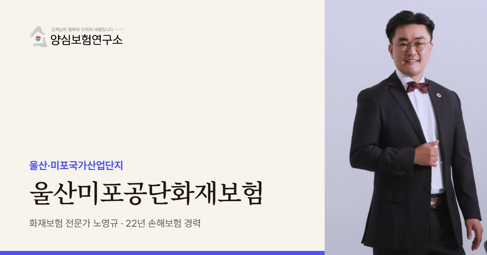

미포공단의 협력사 공장은 대형 화학·조선·자동차 공장과 이웃하거나 그 안에서 일합니다. 노영규 대표가 우리 공장의 재산과 함께 이웃 시설에서 넘어오는 위험까지 넓게 봅니다.
울산미포공단 안내
울산미포공단화재보험은 울산·미포국가산업단지에 입주한 공장과 협력사가 화재·폭발로 입는 재산 손해와 휴업 손실, 이웃에 대한 배상책임을 대비하는 보험을 뜻합니다. 미포공단은 1962년 특정공업지구로 시작해 1991년 국가산단으로 지정된 면적 약 4,847만㎡의 중화학 산단으로, 온산국가산단과는 별개 단지입니다.
석유정제, 석유화학, 1차금속, 자동차, 조선이 핵심 업종이고, 2025년 4분기 기준 1,115개사에 10만여 명이 일하며 가동률은 93.7%에 이릅니다. 대형 정유·화학 공장과 완성차·조선소 주변으로 협력 공장이 둘러싼 구조라, 작은 공장이라도 이웃한 대형 시설의 사고가 곧 우리 공장의 위험이 됩니다.
조성 50년이 넘은 산단 지하에는 가스·화학·송유 배관이 촘촘하게 깔려 있는데, 노후화와 과밀, 불명확한 도면이 오래된 문제로 지적됐습니다. 이를 해결하기 위해 지상 통합파이프랙 공사가 진행 중이고, 디지털트윈 기반 통합관제센터가 화재·폭발·유해물질·지하배관을 24시간 관제하고 있습니다. 울산의 화학사고는 2022년 36건, 2023년 12건으로 보고됐습니다.
최근 사례도 이어졌습니다. 2022년에는 석유화학 공장에서 탱크 청소 중 화재와 합성수지 재생 공정 폭발이 잇따랐고, 2025년 10월에는 정기보수 중인 수소 제조 공정 배관에서 폭발이 나 5명이 다쳤습니다. 보수·청소 작업 중 사고가 많다는 점은 협력사 공장에도 중요한 신호입니다. 작업을 맡은 협력사의 배상책임 문제로 이어질 수 있기 때문입니다.
2022.08 남구 석유화학 공장 합성수지 재생 공정에서 폭발이 나 7명이 다쳤습니다. (MBC)
2025.10 남구 정기보수 중인 수소 제조 공정 배관에서 폭발이 나 5명이 다쳤습니다. (MBC)
주요 위험
정유·화학 공장의 폭발은 주변 공장 재산 피해로 이어질 수 있어 폭발 보장을 확인합니다.
배관 사고는 화재·폭발로 번질 수 있어 공장 부지 주변 배관 현황을 파악합니다.
원청 설비 보수를 맡는 협력사는 작업 중 사고의 배상책임을 함께 준비합니다.
용접·도장 공정은 불티와 유기용제가 겹쳐 화재 위험이 큽니다.
완성차 라인과 연결된 공장은 멈춘 시간의 손실이 커 휴업손해를 넉넉히 봅니다.
인력이 많은 현장은 재산과 별개로 사람에 대한 배상 문제를 준비합니다.
※ 실제 보장 여부와 한도, 면책 사항은 가입하는 상품의 약관과 공장 현황에 따라 달라집니다.
방문 상담
미포공단은 남구 석유화학단지, 동구 조선 권역, 북구 자동차 권역으로 성격이 뚜렷하게 나뉩니다. 공장이 속한 권역에 맞춰 확인할 항목을 정해 방문 상담합니다.
꼭 확인할 점검 항목
고객 후기


※ 실제 계약고객과 나눈 카카오톡 상담과 후기 일부이며, 개인정보는 가렸습니다.
지역 상담 Q&A
우리 공장의 재산 보험에 더해, 원청 현장에서 작업하다 생길 수 있는 사고의 배상책임을 함께 준비해야 합니다. 보수·청소 작업 중 사고가 많은 산단이기 때문입니다.
우리 공장 보험에 폭발 손해가 포함돼 있다면 먼저 보상받고 보험사가 원인 제공자에게 구상할 수 있습니다. 가입 전에 폭발 보장 여부를 꼭 확인하세요.
다른 국가산단입니다. 미포는 남구·동구·북구, 온산은 울주군에 있어 보험 서류에는 정확한 산단 명칭과 주소를 적어야 합니다.
원청 구역에 들여간 우리 장비는 우리 공장 소재지 밖에 있는 재산이라 공장 화재보험으로 보장되지 않을 수 있습니다. 옮겨 다니는 장비를 보는 보험으로 따로 대비하는 것이 안전합니다.
공장 재산과 원청 작업 배상, 폭발 보장까지 함께 보고 빈 곳을 찾아 드립니다.
 MGF 베스트스토리텔러
MGF 베스트스토리텔러 단행본 출간
단행본 출간 월간 칼럼 연재
월간 칼럼 연재 고객 소개 후기
고객 소개 후기 지인 소개 후기
지인 소개 후기